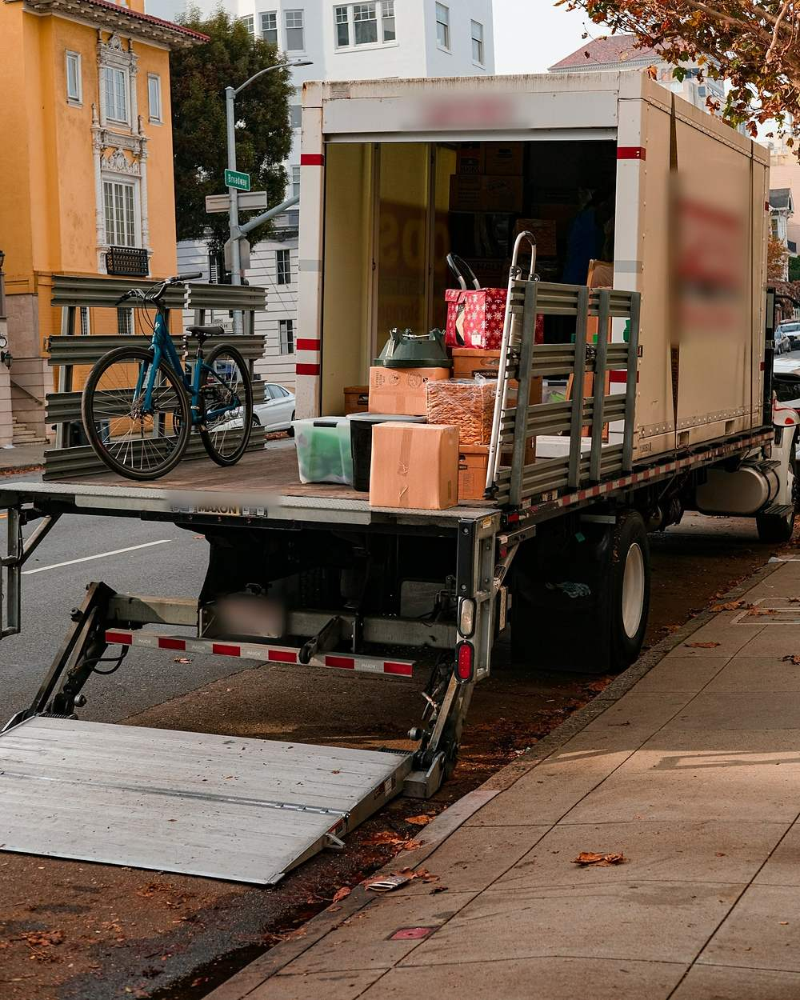
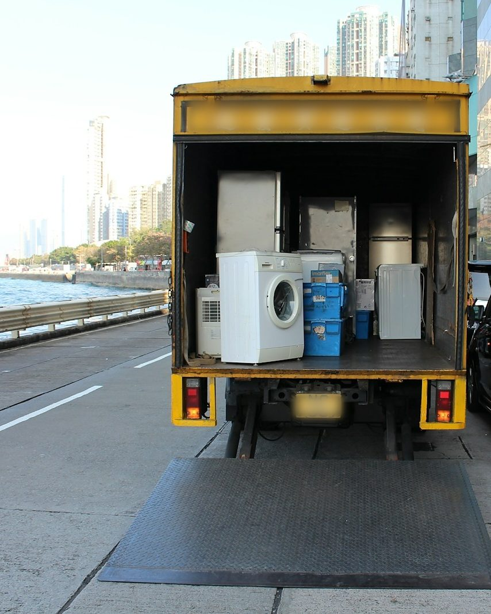
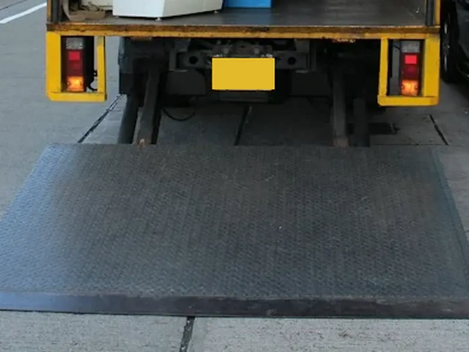
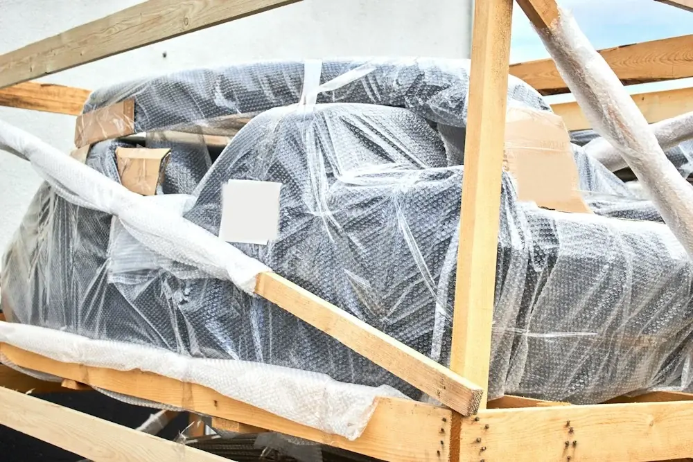
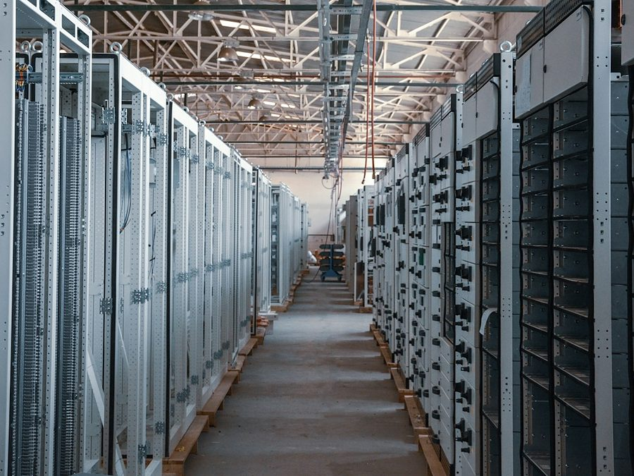
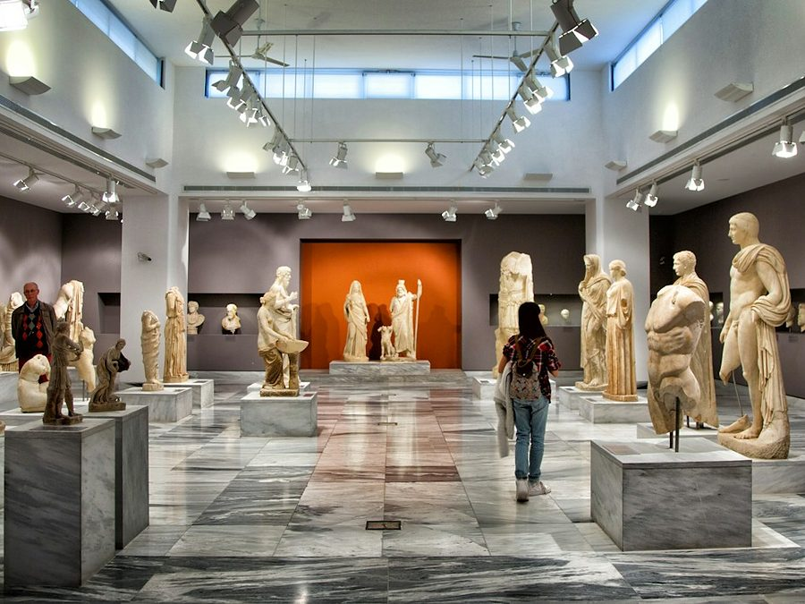

바퀴 장비가 리프트에 오릅니다
의료장비, 반도체 장비, 서버랙, 피아노처럼 바퀴가 달린 장비를 리프트 판 위로 옮깁니다.
바퀴가 굴러 리프트 끝으로 밀릴 수 있는 순간입니다.

참고 이미지바퀴 달린 장비 · 무진동 · 리프트 · 안전난간대
바퀴 달린 장비는 리프트 위에서 밀리고 넘어지기 쉽습니다. 그 순간을 이렇게 지킵니다.
↓ 싣는 순서 보기



의료장비, 반도체 장비, 서버랙, 피아노처럼 바퀴가 달린 장비를 리프트 판 위로 옮깁니다.
바퀴가 굴러 리프트 끝으로 밀릴 수 있는 순간입니다.
난간대 달린 차량은 리프트 가장자리를 막고 올립니다. 무진동 차량에 리프트가 있어도 난간이 없으면 위험이 남습니다. 난간 높이·장착 차량 확인 중
지게차 없이 리프트로 적재함 높이까지 올립니다. 장비 무게가 리프트로 되는지 먼저 확인합니다. 리프트 허용하중 확인 중
키가 크거나 위가 무거운 장비는 이때 넘어지기 쉽습니다.
포장과 상하차, 현장 반입까지 함께 합니다.
1.4톤부터 11톤까지 전 차종 에어서스펜션. 온도·습도 제어와 기록도 됩니다. 전국 운송합니다.
71.7%91 / 127건
2017~2021년 화물자동차 관련 산재 사망사고 가운데 사업장 안에서 짐을 싣고 내리다 난 사고의 비율입니다. 운행 중 교통사고는 24건이었습니다.
출처: 고용노동부 보도자료 2022-11-09 (KDI 게재본) 참고 이미지바퀴 달린 의료장비
참고 이미지바퀴 달린 의료장비 참고 이미지반도체 장비 · CNC
참고 이미지반도체 장비 · CNC
참고 이미지서버 · 전산장비 참고 이미지그랜드피아노
참고 이미지그랜드피아노 참고 이미지슈퍼카 · 오토바이
참고 이미지슈퍼카 · 오토바이
참고 이미지유물 · 미술품